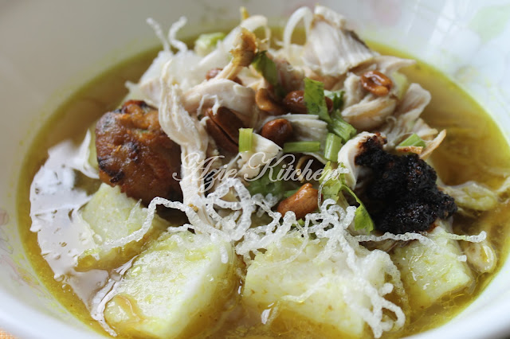
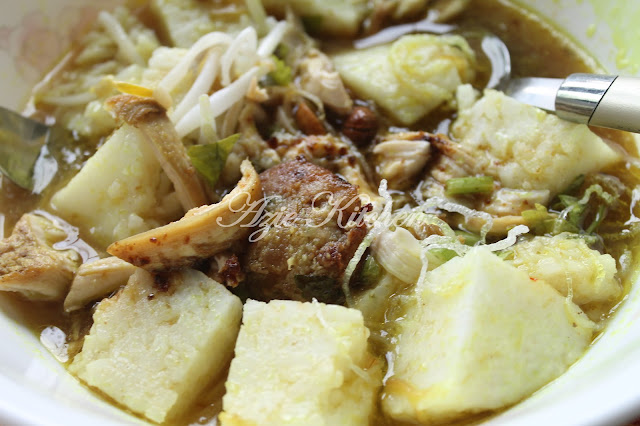

Bahan kuah soto:
Bahan kisar halus:
Bahan tumis:
Bahan lain:
Cara-cara:
Kuah Soto:
1. Panaskan sedikit minyak dalam periuk, tumis bahan bahan tumis hingga harum, masukkan serai, lengkuas dan bahan kisar halus, tumis hingga wangi.
2.Rempah sup dan kurma, disatukan dan bancuh dgn sedikit air, kacau rata dan masukkan dalam periuk tadi, tumis hingga rempah sedikit garing.
3.Masukkan rangka ayam dan isi ayam, gaul rata dan biar kecut sekejap. Tuang air secukupnya, masukkan bawang goreng dan daun sup, kacau rata dan biar mendidih.
4.Keluarkan isi ayam dan digoreng seketika sebelum dicarik halus. Kecilkan api dan renih 1 - 2 jam, tambah garam, secukup rasa.
Soto ayam:
Isi nasi impit dan mee hoon secukupnya dalam mangkuk, tuang kuah. Letak begedel, dan bahan2 lain. Nikmati soto dengan sambal kicap.
Sambal kicap Feeza:
1. Blend cili padi dengan bawang goreng dan kicap lemak masin. Masak cili dan masukkan cuka. Tutup api.
2.Tumbuk bawang putih, kemudian goreng dengan sedikit minyak sampai warna keperangan. Tuang dalam cili tadi. Gaul rata.

Credit: Azie Kitchen